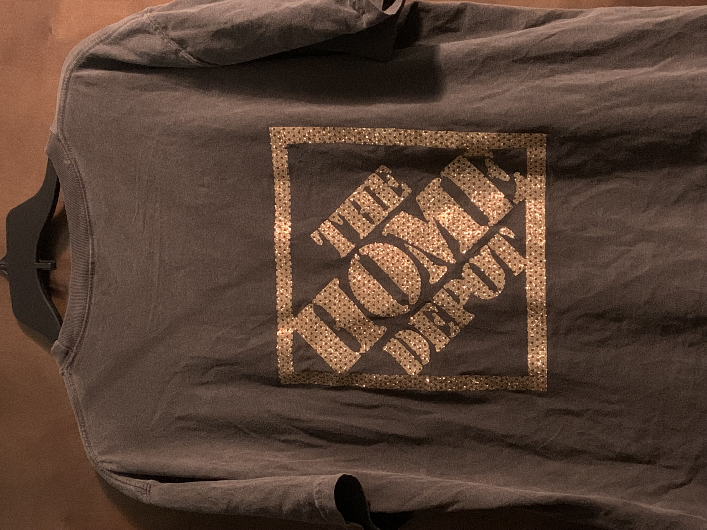

Hobbies!
I enjoy anything that involves me being creative or thinking outside the box, I really enjoy being able to put my mind to it and see what I can make out of it. I have recently made hangers for a bridal party by using my circuit, but there needed to be more than just lettering on the hangers so I thought what way could I make these hangers their own and like ones I have never seen before. I added flowers to help add in the colors of the wedding but to also add a three-D design to them. I really thought about how these would look in pictures from a distance with the dresses hanging on them. So out of every hobby I can think of would be designing something and being artsy and creative. I love to make art and push myself even if the projects end in a complete flop.